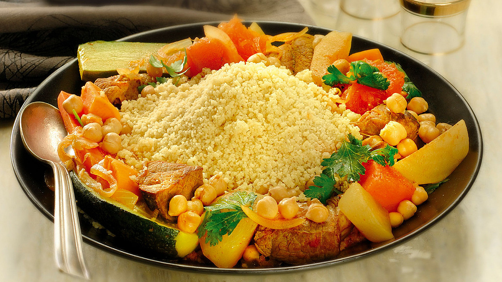

Couscous

Description of the dish
In the heart of Algeria’s capital, couscous takes on a remarkably refined character.
Unlike the robust, tomato-heavy red sauces found in other parts of the country, the
traditional Couscous Algérois is celebrated for its delicate, aromatic white sauce
(sauce blanche). It is a dish born of celebration, typically gracing the table on
Fridays, religious holidays, and weddings. The hallmark of this version is its subtle
sweetness and warmth, brought to life by a fragrant combination of cinnamon and sweet
onions.
What makes this dish truly spectacular is the harmony between the tender meat, usually
chicken, lamb, or a combination of both—and a select handful of pale vegetables like
turnips and zucchini. The couscous grains themselves are treated with immense respect,
steamed multiple times directly over the simmering broth so they absorb the savory vapors,
resulting in a light, fluffy texture that melts in your mouth.
Ingredients
For the couscous grains:
- 500g fine or medium couscous grains
- 2 tbsp vegetable oil
- 1 tbsp butter or smen (Algerian clarified butter)
- Water and a pinch of salt (for dampening)
For the white sauce and meat:
- 4 pieces of chicken or lamb (or a mix)
- 1 large yellow onion, very finely grated or puréed
- 1 tbsp smen or butter (plus 1 tbsp oil)
- 1 cup chickpeas (soaked overnight or canned)
- 3 medium turnips, peeled and halved lengthwise
- 3 medium zucchini, halved lengthwise
- 1 cinnamon stick (plus a pinch of ground cinnamon)
- Salt and black pepper to taste
Steps
-
Prep the Grains: Place the couscous in a large bowl. Drizzle with 2 tablespoons
of oil and rub the grains between your palms to coat them. Sprinkle with a splash
of salted water, toss gently, and let it rest for 10 minutes to absorb the
moisture.
-
Build the Base: In the bottom of a couscousier (or a large, deep pot), melt the
smen and oil. Add the meat, puréed onion, cinnamon stick, ground cinnamon, salt,
and black pepper. Sauté on medium-low heat for about 10 minutes until the onions
are translucent and fragrant, but not browned.
-
Simmer the Broth: Pour in about 1.5 liters of hot water and add the chickpeas
(if using raw/soaked). Bring to a boil, then reduce the heat to a simmer, cover,
and let it cook for 20 minutes.
-
First Steam: Transfer the damp couscous grains into the steamer basket (keskes)
and place it over the simmering pot. Ensure no steam escapes from the sides. Once
steam begins to rise through the grains, let it steam for 15 minutes.
-
Fluff and Return: Remove the steamer basket. Empty the couscous back into the
large bowl. Sprinkle with another half-cup of cold water and a pinch of salt,
using a fork or your hands to break up any lumps. Let it rest for 5 minutes.
-
Add Veggies & Second Steam: Add the turnips and zucchini to the pot with the meat.
Place the steamer basket with the couscous back on top. Steam for another 15
minutes until the vegetables are tender and the grains are perfectly cooked.
-
Finish and Serve: Pour the fluffy couscous into a large serving bowl and gently
fold in a tablespoon of butter or smen. Arrange the tender meat and vegetables
beautifully on top, then ladle the fragrant white sauce and chickpeas generously
over the whole dish.
Home